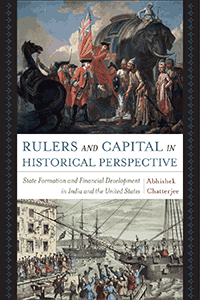

<body bgcolor="#FFFFFF" text="#000000" link="#0000FF" vlink="#CC0000" alink="#CC0000"><center><hr width="350" size="1" align="center" noshade>Explains the concomitant and interconnected emergence of "public" finance and "private" banking systems in the context of state formation in the eighteenth and nineteenth centuries<hr width="350" size="1" align="center" noshade><p><a href="https://cdcshoppingcart.uchicago.edu/Cart/ChicagoBook.aspx?ISBN=&&PRESS=temple" target="_top">Buy this book!</a> | <a href="https://cdcshoppingcart.uchicago.edu/Cart/Cart.aspx?PRESS=temple" target="_top">View Cart</a> | <a href="https://cdcshoppingcart.uchicago.edu/Cart/Cart.aspx?PRESS=temple" target="_top">Check Out</a></p><p></p></center><!--none//--><h1 class = "booktitle">Rulers and Capital in Historical Perspective</h1> <h1 class = "subtitle">State Formation and Financial Development in India and the United States</h1>
<h3>Abhishek Chatterjee </h3>
<p class="info">cloth: $64.50, Sep 17<BR>EAN:&nbsp;978-1-4399-1500-4<BR><font color=#990033>Not Yet Published Preorder</FONT><font size=-7><br>&nbsp;</font></p><p class="info">e-book: $64.50, Sep 17<BR>EAN:&nbsp;978-1-4399-1502-8<BR><font color=#990033>Not Yet Published Preorder</FONT><font size=-7><br>&nbsp;</font></p></p></td></tr></table>
<BR> <p class="info">186 pp<BR> 5.5 x 8.25<BR> 2 tables, 1 figs. <p class="info"><font size=-7>&nbsp;</font></p><p class="info">
</P><BLOCKQUOTE><p>"Rulers and Capital in Historical Perspective <i> </i><i>is theoretically, thematically, and empirically worthwhile. Chatterjee asks important questions to explain the divergent financial institutional development in the United States and India. His comparative analysis is a particular virtue. Chatterjee embarks on a relatively understudied but crucially important aspect of institutionalism, making an unconventional comparison among two big, important countries. His book helps reorient discussion regarding financial institutions-and institutions more generally-to understand why some polities adopted successful institutions while others did not</i>."<br/>-<b>Ryan Saylor</b>, Associate Professor of Political Science at the University of Tulsa and author of <i>State Building in Boom Times: Commodities and Coalitions in Latin America and Africa</i><br>
</BLOCKQUOTE>
<p><i>Rulers and Capital in Historical Perspective </i>explains why modern banking and credit systems emerged in the nineteenth century only in certain countries that subsequently became industrialized and then developed.<br/>Tracing the contemporaneous cases of India and the United States over time, Abhishek Chatterjee begins by identifying the factors that were crucial to the development and regulation of a modern banking and credit system in the United States during the first third of the nineteenth century. He then contrasts these circumstances with those in India, where the state, never having formally incorporated a sophisticated private credit system, relegated it to the sphere of the informal economy.<br/>Chatterjee identifies certain features of both societies, often-though not always-associated with colonialism, that tended to restrict the formation of modern institutionalized money and credit markets. <i>Rulers and Capital in Historical Perspective </i>demonstrates that-the many other differences between the North American colonies prior to independence and India notwithstanding-in both colonial societies, the same facets of their relationships with Great Britain hindered the emergence of a modern banking system.<br>
<P CLASS="top"><A HREF="#top">BACK TO TOP</A></P>&nbsp;
<BR>&nbsp;
&nbsp;<P>
<h2 class="inpageheading"><A NAME="contents"></a>Contents</h2><P><span style="font-family: 'Verdana';font-size: 13px;" >Acknowledgments<br/><br/>1. Introduction: The Question and the Argument in Brief<br/>2. The Argument and the Literature(s)<br/>3. Public Credit and the Emergence of a Money and Credit System in the United States <br/>4. Merchants, Bankers, and Rulers: States, Money, and Credit in India<br/>5. Banks and the State: The United States, 1790&ndash;18366 Conclusion and Further Implications<br/><br/>Notes <br/>References <br/>Index</span></P>
<P CLASS="top"><A HREF="#top">BACK TO TOP</A></P>
</P><BR>&nbsp;
<H2 class="inpageheading"><A NAME="author bio"></a>About the Author(s)</H2><p><b>Abhishek Chatterjee </b>is an Assistant Professor of Political Science at the University of Montana in Missoula.<br>
<P CLASS="top"><A HREF="#top">BACK TO TOP</A></P>
<p><h2 class="inpageheading"><a name="subjects"></a>Subject Categories</h2> <p><a href="http://www.temple.edu/tempress/political.html" target="_top">Political Science and Public Policy</a> <br><a href="http://www.temple.edu/tempress/business.html" target="_top">Business/Economics</a> <br><a href="http://www.temple.edu/tempress/history.html" target="_top">History</a> <br><a href="" target="_top"></a> <br><a href="" target="_top"></a> </p>
</p>
<P>
</P>
<p align="center"><a href="https://cdcshoppingcart.uchicago.edu/Cart/ChicagoBook.aspx?ISBN=&&PRESS=temple" target="_top">Buy this book!</a> | <a href="https://cdcshoppingcart.uchicago.edu/Cart/Cart.aspx?PRESS=temple" target="_top">View Cart</a> | <a href="https://cdcshoppingcart.uchicago.edu/Cart/Cart.aspx?PRESS=temple" target="_top">Check Out</a></p><p><font face="Arial" size="1"><a href="copyright.html" onMouseOver="window.status='Web Copyright Policy';return true;" onMouseOut="window.status=''" title="Web Copyright Policy">&copy;</a> 2017 <a href="http://www.temple.edu" target="new" onMouseOver="window.status='Link to Temple University home page';return true;" onMouseOut="window.status=''" title="Link to Temple University home page">Temple University</a>. All Rights Reserved. http://www.temple.edu/tempress/titles/2458_reg.html</font></p>